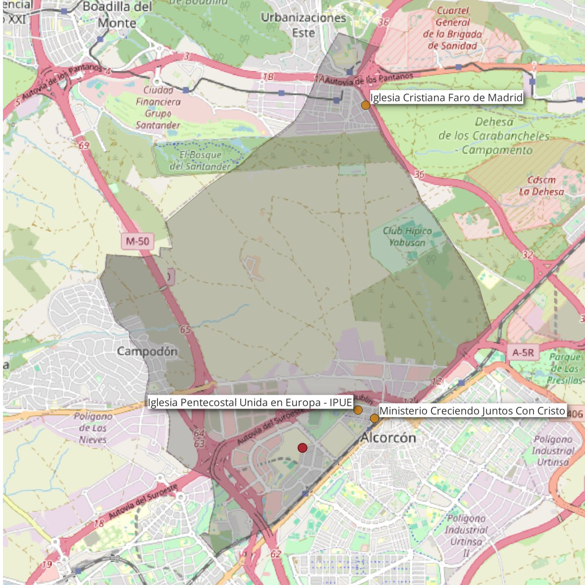
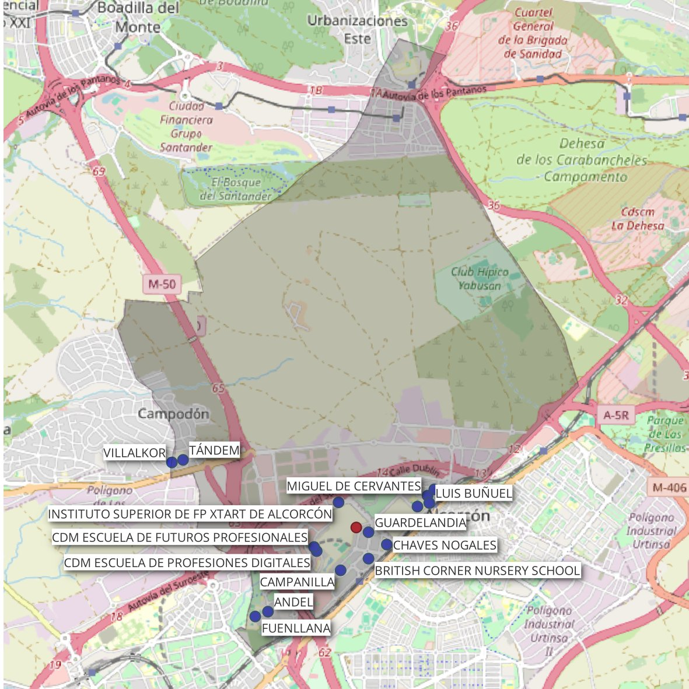

Puntos de interés en el territorio parroquial
Parroquia San Josemaría Escrivá de Balaguer (Alcorcón) · Arciprestazgo de Alcorcón
Entidades religiosas no católicas

4 entidades religiosas no católicas en el territorio de la parroquia.
Evangélicos (4)
- Iglesia Cristiana Faro de MadridAvenida M-40 13 B37, Alcorcón
- Iglesia Pentecostal Unida en Europa - IPUECalle Estocolmo 31 Local 2, Alcorcón
- Ministerio Creciendo Juntos Con CristoAvenida Villaviciosa 4, Alcorcón
- Ministerio Internacional Esperanza de VidaAvenida Villaviciosa 4, Alcorcón
Fuente: Registro de Entidades Religiosas del Ministerio de la Presidencia, Justicia y Relaciones con las Cortes. Situación en el mapa: dirección geocodificada con CartoCiudad (IGN) o Nominatim (OpenStreetMap).
Centros educativos

15 centros educativos en el territorio de la parroquia (privado: 7, público: 5, privado concertado: 3).
| Centro | Tipo | Titularidad | Domicilio | Web |
|---|---|---|---|---|
| ANDEL | Centro privado de educación primaria y secundaria | Privado concertado | Camino Fuentecisneros, 39, 28922 Alcorcón | Página web |
| BRITISH CORNER NURSERY SCHOOL | Escuela infantil privada | Privado | Calle Liverpool, 15, 28922 Alcorcón | |
| CAMPANILLA | Escuela infantil | Público | Calle de Copenhague, 55, 28922 Alcorcón | Página web |
| CDM ESCUELA DE FUTUROS PROFESIONALES | Centro privado de formación profesional específica | Privado | Calle Estambul, 22, 28922 Alcorcón | Página web |
| CDM ESCUELA DE PROFESIONES DIGITALES | Centro privado de formación profesional específica | Privado | Calle de Estambul, 24, 28922 Alcorcón | Página web |
| CENTRO DE ESTUDIOS SUPERIORES JUAN PABLO II | Centro privado de formación profesional específica | Privado | Calle de Estocolmo, 1bis, 28922 Alcorcón | Página web |
| CHAVES NOGALES | Colegio de educación infantil y primaria | Público | Calle de Berlín c/v a C/ Atenas, s/n, 28922 Alcorcón | Página web |
| FUENLLANA | Centro privado de educación infantil, primaria y secundaria | Privado concertado | Travesía Fuente Cisneros, 1, 28922 Alcorcón | Página web |
| GUARDELANDIA | Escuela infantil privada | Privado | Calle de Copenhague, 21, 28922 Alcorcón | |
| INSTITUTO SUPERIOR DE FP XTART DE ALCORCÓN | Centro privado de formación profesional específica | Privado | Avenida Europa, 2, 28922 Alcorcón | |
| LUIS BUÑUEL | Instituto de educación secundaria | Público | Calle de Berlín, 2, 28922 Alcorcón | Página web |
| MIGUEL DE CERVANTES | Colegio de educación infantil, primaria y secundaria | Público | Avenida de Villaviciosa, 7, 28922 Alcorcón | Página web |
| RODARI | Escuela infantil | Público | Avenida de Villaviciosa, s/n, 28922 Alcorcón | Página web |
| TÁNDEM | Centro autorizado de enseñanzas deportivas grado medio y superior | Privado | Calle de Asturias, 8, 28922 Alcorcón | Página web |
| VILLALKOR | Centro privado de educación infantil, primaria y secundaria | Privado concertado | Calle ASTURIAS, 104, 28922 Alcorcón |
Fuente: registro de centros educativos de la Comunidad de Madrid. Solo se recogen los centros en situación de alta.